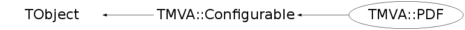

class TMVA::PDF: public TMVA::Configurable
Function Members (Methods)
public:
| virtual | ~PDF() |
| void | TObject::AbstractMethod(const char* method) const |
| void | TMVA::Configurable::AddOptionsXMLTo(void* parent) const |
| void | AddXMLTo(void* parent) |
| virtual void | TObject::AppendPad(Option_t* option = "") |
| virtual void | TObject::Browse(TBrowser* b) |
| void | BuildPDF(const TH1* theHist) |
| void | TMVA::Configurable::CheckForUnusedOptions() const |
| static TClass* | Class() |
| virtual const char* | TObject::ClassName() const |
| virtual void | TObject::Clear(Option_t* = "") |
| virtual TObject* | TObject::Clone(const char* newname = "") const |
| virtual Int_t | TObject::Compare(const TObject* obj) const |
| TMVA::Configurable | TMVA::Configurable::Configurable(const TString& theOption = "") |
| virtual void | TObject::Copy(TObject& object) const |
| void | DeclareOptions() |
| virtual void | TObject::Delete(Option_t* option = "")MENU |
| virtual Int_t | TObject::DistancetoPrimitive(Int_t px, Int_t py) |
| virtual void | TObject::Draw(Option_t* option = "") |
| virtual void | TObject::DrawClass() constMENU |
| virtual TObject* | TObject::DrawClone(Option_t* option = "") constMENU |
| virtual void | TObject::Dump() constMENU |
| virtual void | TObject::Error(const char* method, const char* msgfmt) const |
| virtual void | TObject::Execute(const char* method, const char* params, Int_t* error = 0) |
| virtual void | TObject::Execute(TMethod* method, TObjArray* params, Int_t* error = 0) |
| virtual void | TObject::ExecuteEvent(Int_t event, Int_t px, Int_t py) |
| virtual void | TObject::Fatal(const char* method, const char* msgfmt) const |
| virtual TObject* | TObject::FindObject(const char* name) const |
| virtual TObject* | TObject::FindObject(const TObject* obj) const |
| const char* | TMVA::Configurable::GetConfigDescription() const |
| const char* | TMVA::Configurable::GetConfigName() const |
| virtual Option_t* | TObject::GetDrawOption() const |
| static Long_t | TObject::GetDtorOnly() |
| Int_t | GetHistNBins(Int_t evtNum = 0) |
| virtual const char* | TObject::GetIconName() const |
| Double_t | GetIntegral(Double_t xmin, Double_t xmax) |
| TMVA::PDF::EInterpolateMethod | GetInterpolMethod() |
| virtual const char* | GetName() const |
| Int_t | GetNBins() const |
| TH1* | GetNSmoothHist() const |
| virtual char* | TObject::GetObjectInfo(Int_t px, Int_t py) const |
| static Bool_t | TObject::GetObjectStat() |
| virtual Option_t* | TObject::GetOption() const |
| const TString& | TMVA::Configurable::GetOptions() const |
| TH1* | GetOriginalHist() const |
| TH1* | GetPDFHist() const |
| UInt_t | GetReadingVersion() const |
| TH1* | GetSmoothedHist() const |
| TSpline* | GetSpline() const |
| virtual const char* | TObject::GetTitle() const |
| virtual UInt_t | TObject::GetUniqueID() const |
| Double_t | GetVal(Double_t x) const |
| Double_t | GetValInverse(Double_t y, Bool_t isMonotonouslyIncreasingFunction = kFALSE) const |
| Double_t | GetXmax() const |
| Double_t | GetXmin() const |
| virtual Bool_t | TObject::HandleTimer(TTimer* timer) |
| virtual ULong_t | TObject::Hash() const |
| virtual void | TObject::Info(const char* method, const char* msgfmt) const |
| virtual Bool_t | TObject::InheritsFrom(const char* classname) const |
| virtual Bool_t | TObject::InheritsFrom(const TClass* cl) const |
| virtual void | TObject::Inspect() constMENU |
| void | TObject::InvertBit(UInt_t f) |
| virtual TClass* | IsA() const |
| virtual Bool_t | TObject::IsEqual(const TObject* obj) const |
| virtual Bool_t | TObject::IsFolder() const |
| Bool_t | TObject::IsOnHeap() const |
| virtual Bool_t | TObject::IsSortable() const |
| Bool_t | TObject::IsZombie() const |
| virtual void | TObject::ls(Option_t* option = "") const |
| void | TObject::MayNotUse(const char* method) const |
| virtual Bool_t | TObject::Notify() |
| void | TObject::Obsolete(const char* method, const char* asOfVers, const char* removedFromVers) const |
| static void | TObject::operator delete(void* ptr) |
| static void | TObject::operator delete(void* ptr, void* vp) |
| static void | TObject::operator delete[](void* ptr) |
| static void | TObject::operator delete[](void* ptr, void* vp) |
| void* | TObject::operator new(size_t sz) |
| void* | TObject::operator new(size_t sz, void* vp) |
| void* | TObject::operator new[](size_t sz) |
| void* | TObject::operator new[](size_t sz, void* vp) |
| TObject& | TObject::operator=(const TObject& rhs) |
| virtual void | TObject::Paint(Option_t* option = "") |
| virtual void | TMVA::Configurable::ParseOptions() |
| TMVA::PDF | PDF(const TString& name, Bool_t norm = kTRUE) |
| TMVA::PDF | PDF(const TString& name, const TString& options, const TString& suffix = "", TMVA::PDF* defaultPDF = 0, Bool_t norm = kTRUE) |
| TMVA::PDF | PDF(const TString& name, const TH1* theHist, TMVA::PDF::EInterpolateMethod method = kSpline2, Int_t minnsmooth = 0, Int_t maxnsmooth = 0, Bool_t checkHist = kFALSE, Bool_t norm = kTRUE) |
| TMVA::PDF | PDF(const TString& name, const TH1* theHist, TMVA::KDEKernel::EKernelType ktype, TMVA::KDEKernel::EKernelIter kiter, TMVA::KDEKernel::EKernelBorder kborder, Float_t FineFactor, Bool_t norm = kTRUE) |
| virtual void | TObject::Pop() |
| virtual void | TObject::Print(Option_t* option = "") const |
| void | TMVA::Configurable::PrintOptions() const |
| void | ProcessOptions() |
| virtual Int_t | TObject::Read(const char* name) |
| void | TMVA::Configurable::ReadOptionsFromStream(istream& istr) |
| void | TMVA::Configurable::ReadOptionsFromXML(void* node) |
| void | ReadXML(void* pdfnode) |
| virtual void | TObject::RecursiveRemove(TObject* obj) |
| void | TObject::ResetBit(UInt_t f) |
| virtual void | TObject::SaveAs(const char* filename = "", Option_t* option = "") constMENU |
| virtual void | TObject::SavePrimitive(ostream& out, Option_t* option = "") |
| void | TObject::SetBit(UInt_t f) |
| void | TObject::SetBit(UInt_t f, Bool_t set) |
| void | TMVA::Configurable::SetConfigDescription(const char* d) |
| void | TMVA::Configurable::SetConfigName(const char* n) |
| virtual void | TObject::SetDrawOption(Option_t* option = "")MENU |
| static void | TObject::SetDtorOnly(void* obj) |
| void | TMVA::Configurable::SetMsgType(TMVA::EMsgType t) |
| static void | TObject::SetObjectStat(Bool_t stat) |
| void | TMVA::Configurable::SetOptions(const TString& s) |
| void | SetReadingVersion(UInt_t rv) |
| virtual void | TObject::SetUniqueID(UInt_t uid) |
| virtual void | ShowMembers(TMemberInspector& insp) |
| virtual void | Streamer(TBuffer& b) |
| void | StreamerNVirtual(TBuffer& b) |
| virtual void | TObject::SysError(const char* method, const char* msgfmt) const |
| Bool_t | TObject::TestBit(UInt_t f) const |
| Int_t | TObject::TestBits(UInt_t f) const |
| virtual void | TObject::UseCurrentStyle() |
| void | ValidatePDF(TH1* original = 0) const |
| virtual void | TObject::Warning(const char* method, const char* msgfmt) const |
| virtual Int_t | TObject::Write(const char* name = 0, Int_t option = 0, Int_t bufsize = 0) |
| virtual Int_t | TObject::Write(const char* name = 0, Int_t option = 0, Int_t bufsize = 0) const |
| void | TMVA::Configurable::WriteOptionsToStream(ostream& o, const TString& prefix) const |
protected:
| virtual void | TObject::DoError(int level, const char* location, const char* fmt, va_list va) const |
| void | TMVA::Configurable::EnableLooseOptions(Bool_t b = kTRUE) |
| const TString& | TMVA::Configurable::GetReferenceFile() const |
| Bool_t | TMVA::Configurable::LooseOptionCheckingEnabled() const |
| void | TObject::MakeZombie() |
| void | TMVA::Configurable::ResetSetFlag() |
| void | TMVA::Configurable::WriteOptionsReferenceToFile() |
private:
| void | BuildKDEPDF() |
| void | BuildSplinePDF() |
| void | CheckHist() const |
| void | FillHistToGraph() |
| void | FillSplineToHist() |
| void | FindBinInverse(const TH1* histogram, Int_t& lowerBin, Int_t& higherBin, Double_t& lowerBinValue, Double_t& higherBinValue, Double_t y, Bool_t isMonotonouslyIncreasingFunction = kFALSE) const |
| Double_t | GetIntegral() const |
| Double_t | GetPdfHistBinWidth() const |
| static Double_t | IGetVal(Double_t*, Double_t*) |
| TMVA::MsgLogger& | Log() const |
| void | SmoothHistogram() |
| static TMVA::PDF* | ThisPDF() |
| Bool_t | UseHistogram() const |
Data Members
public:
| enum EInterpolateMethod { | kSpline0 | |
| kSpline1 | ||
| kSpline2 | ||
| kSpline3 | ||
| kSpline5 | ||
| kKDE | ||
| }; | ||
| enum TObject::EStatusBits { | kCanDelete | |
| kMustCleanup | ||
| kObjInCanvas | ||
| kIsReferenced | ||
| kHasUUID | ||
| kCannotPick | ||
| kNoContextMenu | ||
| kInvalidObject | ||
| }; | ||
| enum TObject::[unnamed] { | kIsOnHeap | |
| kNotDeleted | ||
| kZombie | ||
| kBitMask | ||
| kSingleKey | ||
| kOverwrite | ||
| kWriteDelete | ||
| }; |
private:
| TString | fBorderMethodString | |
| Bool_t | fCheckHist | check of source histogram |
| Float_t | fFineFactor | fine tuning factor for Adaptive KDE |
| TGraph* | fGraph | ! needed to create PDF from histogram |
| TH1* | fHist | copy of input histogram |
| Int_t | fHistAvgEvtPerBin | avg event per source hist bin |
| Int_t | fHistDefinedNBins | source hist bin num set by user |
| TH1* | fHistOriginal | the input histogram |
| TF1* | fIGetVal | integration interface |
| TMVA::PDF::EInterpolateMethod | fInterpolMethod | interpolation method |
| TString | fInterpolateString | |
| TMVA::KDEKernel::EKernelBorder | fKDEborder | The method to take care about "border" effects (string) |
| TMVA::KDEKernel::EKernelIter | fKDEiter | Number of iterations (adaptive or not) |
| TString | fKDEiterString | |
| TMVA::KDEKernel::EKernelType | fKDEtype | Kernel type to use for KDE |
| TString | fKDEtypeString | strings used to read definitions |
| TMVA::MsgLogger* | fLogger | ! message logger |
| Int_t | fMaxNsmooth | Max number of smoothing iterations |
| Int_t | fMinNsmooth | Min number of smoothing iterations |
| TH1* | fNSmoothHist | number of smooth for each bin |
| Bool_t | fNormalize | normalize histogram (false for cumulative distribution used in GaussTranform) |
| Int_t | fNsmooth | Min number of smoothing iterations |
| TH1* | fPDFHist | the high-binned histogram corresponding to the PDF |
| TString | fPDFName | for output |
| UInt_t | fReadingVersion | the TMVA version of the weight file |
| TSpline* | fSpline | ! the used spline type |
| TString | fSuffix | ! the suffix for options |
| Bool_t | fUseHistogram | spline0 uses histogram as reference |
| static const Double_t | fgEpsilon | minimum PDF return |
| static const Bool_t | fgManualIntegration | manual integration (sum over bins) or DGAUSS |
| static const Int_t | fgNbin_PdfHist | number of bins in high-binned reference histogram |
| static TMVA::PDF* | fgThisPDF | this PDF pointer |
Class Charts
{kind=link}
{kind=link}
{kind=link}
{kind=link}

Function documentation
PDF(const TString& name, const TH1* theHist, TMVA::PDF::EInterpolateMethod method = kSpline2, Int_t minnsmooth = 0, Int_t maxnsmooth = 0, Bool_t checkHist = kFALSE, Bool_t norm = kTRUE)
constructor of spline based PDF:
PDF(const TString& name, const TH1* theHist, TMVA::KDEKernel::EKernelType ktype, TMVA::KDEKernel::EKernelIter kiter, TMVA::KDEKernel::EKernelBorder kborder, Float_t FineFactor, Bool_t norm = kTRUE)
constructor of kernel based PDF:
PDF(const TString& name, const TString& options, const TString& suffix = "", TMVA::PDF* defaultPDF = 0, Bool_t norm = kTRUE)
Int_t GetHistNBins(Int_t evtNum = 0)
void BuildKDEPDF()
creates high-binned reference histogram to be used instead of the PDF for speed reasons
void SmoothHistogram()
void FillSplineToHist()
creates high-binned reference histogram to be used instead of the PDF for speed reasons
Double_t GetValInverse(Double_t y, Bool_t isMonotonouslyIncreasingFunction = kFALSE) const
returns value PDF^{-1}(y)
void FindBinInverse(const TH1* histogram, Int_t& lowerBin, Int_t& higherBin, Double_t& lowerBinValue, Double_t& higherBinValue, Double_t y, Bool_t isMonotonouslyIncreasingFunction = kFALSE) const
find bin from value on ordinate
void DeclareOptions()
define the options (their key words) that can be set in the option string
know options:
PDFInterpol[ivar] <string> Spline0, Spline1, Spline2 <default>, Spline3, Spline5, KDE used to interpolate reference histograms
if no variable index is given, it is valid for ALL the variables
NSmooth <int> how often the input histos are smoothed
MinNSmooth <int> min number of smoothing iterations, for bins with most data
MaxNSmooth <int> max number of smoothing iterations, for bins with least data
NAvEvtPerBin <int> minimum average number of events per PDF bin
TransformOutput <bool> transform (often strongly peaked) likelihood output through sigmoid inversion
fKDEtype <KernelType> type of the Kernel to use (1 is Gaussian)
fKDEiter <KerneIter> number of iterations (1 --> "static KDE", 2 --> "adaptive KDE")
fBorderMethod <KernelBorder> the method to take care about "border" effects (1=no treatment , 2=kernel renormalization, 3=sample mirroring)
void ProcessOptions()
Double_t GetPdfHistBinWidth() const
Bool_t UseHistogram() const
do we use the original histogram as reference ?
{ return fUseHistogram; }